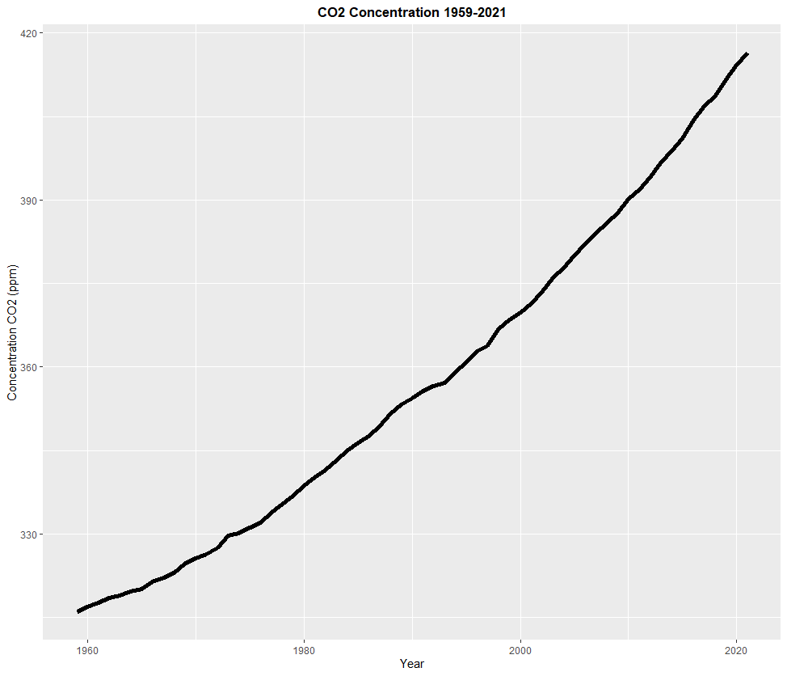
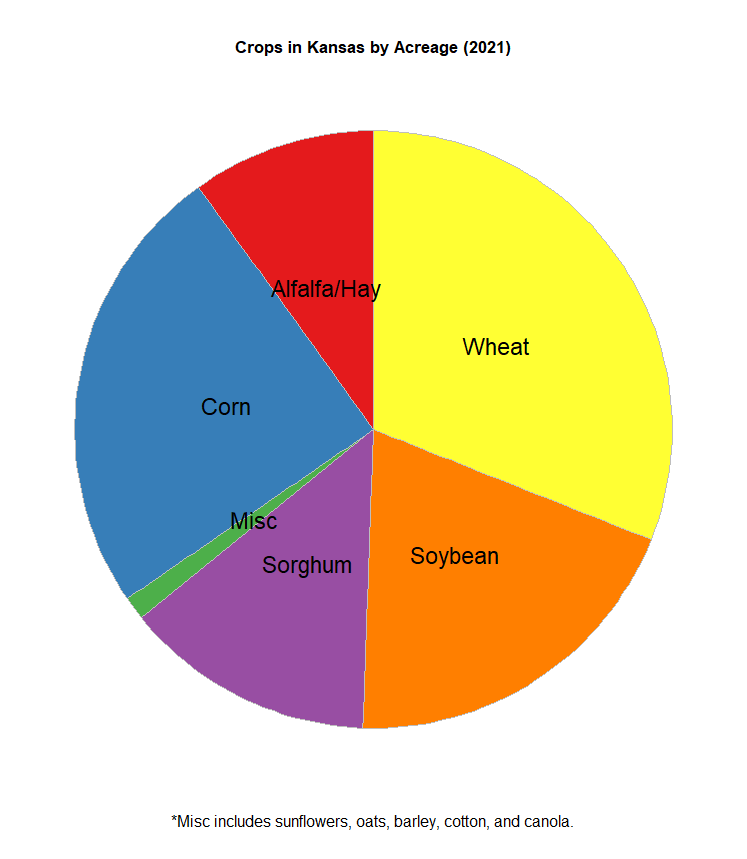
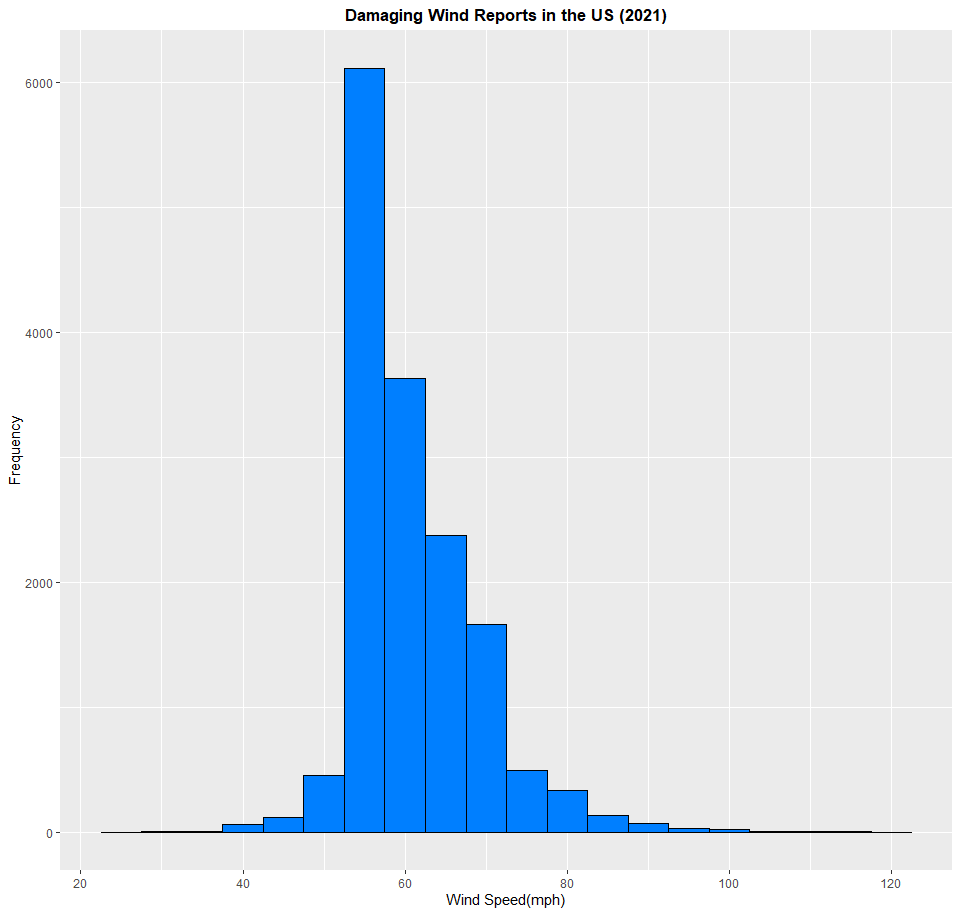
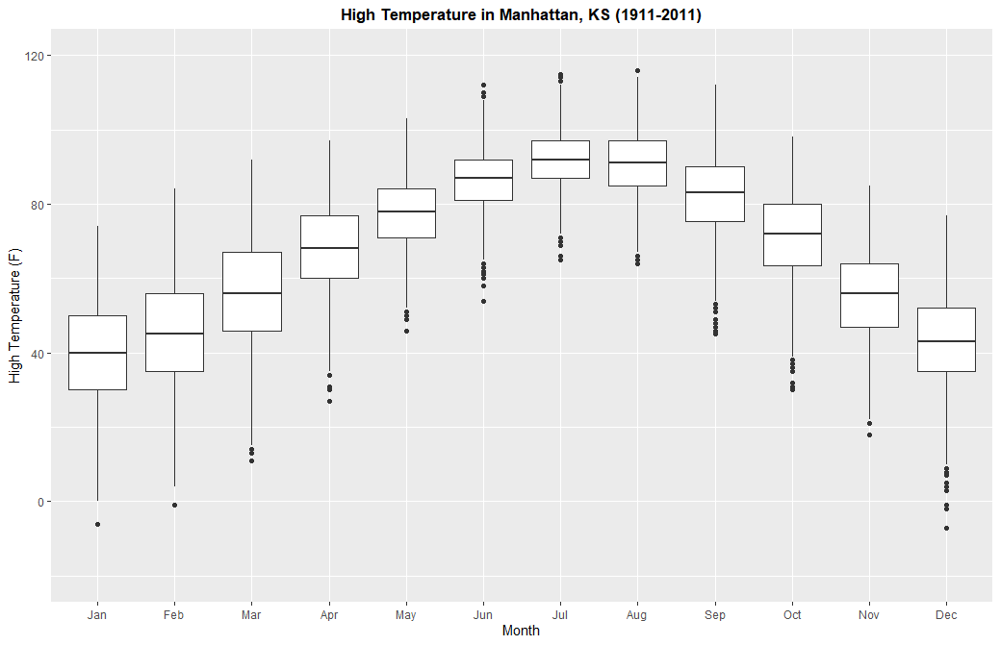

Intro
In this project, I want to play around a bit with ggplot2. You may have seen that in some of my class exercises, I worked on creating a graph with the base R package. But we can do better than this. ggplot2 offers so much more on how to create graphs of more quality, and even more features and customizability. There are two options to gathering data for this projet. One is to use the datasets that are built in with the packages I can download from R. All I need to do to use these is call them with the data() command. The second option, and one that gives you more choices, is to download them off the internet. A .csv file will be the most beneficial in this project. Let's get started with some of the more basic graphs.
Packages Used
IMPORTANT: Above all, remember to load ggplot2 if you want to do this exercise too and mess with the code yourself. For example, remember to type library(ggplot2) before you get graphing! The following packages will be used for this exercise:
- ggplot2
- RColorBrewer
- dplyr
- ggrepel
Scatterplots and Lines
First, we'll do a scatterplot. The dataset we'll be using is called mtcars, which contains data taken from an issue of the Motor Trend US magazine from 1974. Contained in this dataset is information about 30 different cars from model years 1973 and 1974, such as horsepower, gas mileage, weight, engine displacement, etc. You don't need to load any packages to access this dataset, since it is preloaded with R. For this graph, I could just ask ggplot to plot the datapoints. But I want to add a little bit more information to my graph. For instance, I want the viewer to be able to identify each data point as one of the cars in this dataset. I also want them to be able to tell how many cylinders are in each car's engine to convey even more information about fuel economy from each car. If I want to add labels to my datapoints, I have to download the package ggrepel.
> data(mtcars)
> ggplot(mtcars, aes(x=hp, y=mpg)) + labs(x="Horsepower (hp)", y="Gas Mileage (mpg)", title="Horsepower vs Gas Mileage") + geom_point(aes(shape=cyl, color=cyl), size=3) + geom_smooth(method=lm, se=FALSE, col="#A9A9A9", linetype = "dashed") + theme(plot.title = element_text(hjust = 0.5, face = "bold")) + geom_text_repel(aes(label = rownames(mtcars)))
If you look at the graph, you'll see that I also drew a trendline for reference. This graph shows that cars with more horsepower will get lower gas mileage. It also shows that cars with more cylinders in their engine will also get lower gas mileage, as they will also have a higher horsepower.
Next, I'll work on a line graph. For this chart, I will be using a dataset I downloaded off the internet, which contains measurement of carbon dioxide in the air taken from an observatory at the top of Mauna Loa, Hawaii every year from 1959 to 2021. If you've been paying attention to the climate crisis, you'll probably know what I'm talking about. Click on this link to download the data that I used for this graph. Here's the code to create that chart in ggplot:

> CO2 <- read.csv(file="co2_annmean_mlo.csv", header=TRUE, sep=",")
> ggplot(CO2, aes(x=year, y=mean)) + labs(x="Year", y="Concentration CO2 (ppm)", title="CO2 Concentration 1959-2021") + geom_line(size=2) + theme(plot.title = element_text(hjust = 0.5, face = "bold"))
As this line chart shows, to our dismay, the concentration of CO2 in the atmosphere has been almost constantly increasing since 1959. Continuing to burn fossil fuels, opening up more manufacturing plants using said fossil fuels, expanding cities, and building new cars with a combustion engine is the cause of this. Volcanic activity and fire does contribute to a higher concentration of CO2, but it isn't happening 24/7 around the clock and all over the world like human activity is. And the carbon sinks in our world cannot work fast enough to consume this constantly growing flux of carbon being added to our atmosphere. When this happens, the world will continue to get warmer and warmer. To make things clear, the planet is not going to blow up or anything. Earth will do just fine with or without us. However, us humans, and all life on Earth are in major trouble, as we were not built to handle a hothouse Earth that we are creating, and show little, if any, sign of slowing down.
Pie Charts and Bar Graphs:
Next, I will work on a pie chart. Pie charts and bar graphs are a bit more complicated than scatterplots and line graphs, since their purposes are not quite as intuitive. In other words, they are more specialized in their purposes. More on bar graphs later. Pie charts use categorical data, and answer questions such as "How much of X is part of Y?". For example, Kansas is known worldwide for its farming. About 88% of land in the state is used in farming and growing crops such as wheat (winter wheat in this case), soybean, sorghum, corn, and even sunflowers. Here's a link to a report created in June 2021 about the amount of acres used for farming crops in Kansas. I'm going to use the data from this to create my own dataset and make a pie chart out of it to answer the question "How much farmland in Kansas is used for growing something?". Here's the code I used to create this dataset, and then the code to create the pie chart.

> crops <- c("Wheat", "Corn", "Soybean", "Sorghum", "Alfalfa/Hay", "Misc")
> acres <- c(7300000, 5800000, 4600000, 3200000, 2340000, 296000)
> kscrops <- data.frame(crops,acres)
> kscrops <- kscrops %>% arrange(desc(crops)) %>% mutate(prop=acres/sum(kscrops$acres)*23500000) %>% mutate(ypos=cumsum(prop)-(0.5*prop))
> ggplot(kscrops, aes(x="", y=acres, fill=crops)) + geom_bar(stat="identity", width=5, color="gray") + coord_polar("y", start=0) + labs(title="Crops in Kansas by Acreage (2021)", caption="*Misc includes sunflowers, oats, barley, cotton, and canola.") + theme_void() + theme(legend.position="none", plot.title = element_text(hjust = 0.5, face = "bold"), plot.caption = element_text(hjust = 0.5, vjust = 0.1, size=12)) + geom_text(aes(y=ypos, label=crops), color="black", size=6) + scale_fill_brewer(palette="Set1")
Based on this graph, the most acres of farmland in Kansas are used for wheat and corn. Unsurprising, as these are two of the most important crops farmers could possibly grow. One thing worth noting from this report is that the data I used is the acres planted. I didn't use how many acres were actually harvested when all is said and done. Some of the acreage planted was destroyed in cold snaps, pests, storms or fire, or was deemed of poor quality by farmers or agricultural inspectors. I also didn't include what these crops would be used for, should they successfully be grown and harvested. I omitted these facts, because I wanted to keep things simple when creating the chart. The report I used to create the data for the chart also doesn't include every single crop grown in Kansas, as that would make for quite a long report. Fruits and vegetables, such as apples and pumpkins, are also grown in Kansas, but how much acreage was used for them was not specified in the report. And this doesn't even include local gardens that someone might have in their backyard. Despite all this, corn and wheat still reign supreme in Kansas.
Next, a bar graph. To do this, I'm going to use the dataset USAccDeaths, which shows how many accidental deaths occurred in the United States in every month from January 1973 to December 1978. However, the dataset is not quite as complete as I'd like it to be. I'm going to fix this in the code section by adding more columns and filling them in using the rep() command to add a month column and a year column. I also will be using dplyr to arrange the rows in the order I want to, since the default tendency for R is to sort things alphabetically, which is not how the months of the year work. Another problem I will encounter is that RColorBrewer does not have a color palette of 12 colors that I'd like to have on my graph. This can be fixed using the colorRampPalette() function. These issues aside, I want to create a pie chart that answers the following question: "During which month of the year were there the most accidental deaths from 1973 to 1978?". Here's the code I used to enhance the dataframe, create the color palette, and then create the bar graph.
> data(USAccDeaths)
> USAccDeaths <- as.data.frame(USAccDeaths)
> mon <- rep(c("January","February","March","April","May","June","July","August","September","October","November","December"), times=6)
> month <- as.data.frame(mon)
> USAccDeaths <- cbind(USAccDeaths, month)
> names(USAccDeaths)[1] <- "deaths"
> USAccDeaths <- aggregate(.~mon, data=USAccDeaths, FUN=sum)
> names(USAccDeaths)[2] <- "deaths"
> monorder <- c("January","February","March","April","May","June","July","August","September","October","November","December")
> USAccDeaths <- USAccDeaths %>% slice(match(monorder, mon))
> USAccDeaths$mon <- factor(USAccDeaths$mon, levels=c("January","February","March","April","May","June","July","August","September","October","November","December"))
> theme <- brewer.pal(11, "RdYlBu")
> theme <- colorRampPalette(theme)(12)
> ggplot(USAccDeaths, aes(x=mon, y=deaths)) + geom_bar(stat="identity", fill=theme) + labs(x="Month", y="Deaths", title="Accidental Deaths in US by Month (1973-1978)") + theme(plot.title = element_text(hjust = 0.5, face = "bold"))
Based on this graph, June, July, and August have the most accidental deaths on the job. This is likely explained by heatstroke, which happens when people work outside in the summer heat for too long. Intuitively, July is the month with the most accidental deaths on the job, as July is typically the hottest month of the year in the Northern Hemisphere.
Histograms, Density Plots, and Boxplots
Next, I want to create a histogram. Histograms are a helpful way of showing the frequency of something. When you plot a histogram, you get a series of bars lined up next to each other, which makes a histogram somewhat related to a bar graph. A density plot is also related to a histogram, but features what is known as a bell curve instead of a series of bars. Histograms and density plots can handle copious amounts of data, and several unique values, making them very helpful for scientists, researchers, or anybody wanting to answer questions with graphs. Which one you choose to use depends on how you want to present the data. If you want to present it after sorting it out into what's called bins, you'd use a histogram. Unfortunately, this can mean that information can get lost in the creation, so think carefully about what you want to do with it. In this part of the exercise, I want to use a dataset of damaging wind reports in the United States in the year 2021 to create a histogram. Keep in mind, each entry in this dataset is input in knots, so I want to translate them to miles per hour. Click on this link and download the file. Here's the code to create the histogram:

> wind <- read.csv(file="2021_wind.csv", header=TRUE, sep=",")
> wind <- as.data.frame(wind)
> wind$mag_mph <- wind$mag * 1.15
> ggplot(wind, aes(x=mag_mph)) + geom_histogram(binwidth=5, fill="#007FFF", color="black") + labs(x="Wind Speed(mph)", y="Frequency", title="Damaging Wind Reports in the US (2021)") + scale_x_continuous(breaks=seq(20,120,20)) + theme(plot.title = element_text(hjust = 0.5, face = "bold"))
Based on this histogram, the most damaging wind reports from thunderstorms in the United States in 2021 measured in about 55 to 60 mph. This is just under what qualifies for a severe thunderstorm (58 mph). If you look at the lowest value on the datset, you get a value of about 20 mph, and a maximum value of about 120 mph. Now to create a density plot. If you don't want to sort out each data point into bins, like you would with a histogram, you'd use a density plot. This will give you an even clearer picture on the meaning of the data you use. In this example, I'm going to use the built-in dataset midwest, which contains demographic data of every county in Illinois, Indiana, Ohio, Michigan, and Wisconsin. I want to create a density plot of how much of the population of each county in the five states has a high school diploma. Here's the code I used to create the density plot:
> data(midwest)
> ggplot(midwest, aes(x=perchsd)) + geom_density(color="darkblue", fill="lightblue", size=1, alpha=0.5) + xlim(40,100) + labs(x="Percentage Population", y="Density", title="Percentage of Population with High School Diploma (IL, IN, MI, OH, and WI)") + theme(plot.title = element_text(hjust = 0.5, face = "bold")) + geom_vline(aes(xintercept=mean(perchsd)), color="red", linetype="dashed", size=2)
Based on this, each county in this five-state area has an average of about 73% to 75% of each county's population with a high school diploma. I added a dashed red line on the chart to make this average even more visible. Some counties, though, have a population of only 40% of it being high-school educated, while others approach 100% of its population. For the boxplot, I'm going to use a dataset that I was given as part of my studies when I was taking a course at Kansas State. This dataset contains records of weather recorded in Manhattan, Kansas on every day from January 1st, 1911 to December 31st, 2011. Click here to download it. In this part of the exercise, I want to create a series of boxplots depicting the range of the maximum high temperatures recorded in this timepsan in Manhattan, KS for each month. I don't have to create 12 boxplots, as I can stack them all onto one chart. Interestingly, when I was messing around with the dataset, I found two erroneous entries by noticing them on my chart, and then checking the almanac for that day. One on June 15th, 2011, the other on November 21st, 2011. So I'm going to remove them. Here's the code I used to create the boxplots:

> weather <- read.csv(file="ManhattanWeather.csv", header=TRUE, sep=",")
> weather <- as.data.frame(weather)
> weather <- weather[-c(36691, 36850),]
> ggplot(weather, aes(x=Month, group=Month, y=Max..F.)) + geom_boxplot() + scale_x_discrete(name = "Month", limits=c("Jan", "Feb", "Mar", "Apr", "May", "Jun", "Jul", "Aug", "Sep", "Oct", "Nov", "Dec")) + ylim(-20,120) + labs(y="High Temperature (F)", title="High Temperature in Manhattan, KS (1911-2011)") + theme(plot.title = element_text(hjust = 0.5, face = "bold"))
With this graph, you can see the average values, quartiles, as well as extremes on this dataset. On average, July is the hottest month based on this data, while January is the coldest month. However, the highest high temperature was recorded in August, while the lowest high temperature was recorded in December. If you want, you can do this with low temperatures too.